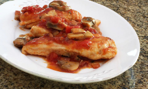

Chicken With Creamy Curry Sauce
35 min., serves 4-6
Ingredients
| Name | QTY |
|---|---|
| parsley (fresh, chopped or about 1 tablespoon dried) | 70 ml |
| green onions (thinly sliced) | 6 |
| cloves garlic (finely minced) | 4 |
| chicken breast halves (boneless, without skin) | 4 to 6 |
| flour | 70 ml |
| extra virgin olive oil | 2 tbsp. |
| butter | 1 tbsp. |
| chicken stock (unsalted or low sodium) | 280 ml |
| curry powder | 1,5 tsp. |
| heavy cream | 210 ml |
| salt | to taste |
| black pepper | to taste |
Method
- Gather the ingredients.
- Chop the parsley. Slice the green onions thinly. Finely mince the garlic.
- Pat the chicken breasts dry and lightly sprinkle them all over with salt and pepper. Dredge each of them in flour to coat both sides.
- In a large skillet or sauté pan, heat the oil and butter over medium heat. Add the chicken breasts and cook for about 4 to 5 minutes on each side, until lightly browned. Add the chicken broth, wine, parsley, green onions, garlic, and curry powder. Bring to a boil; reduce the heat to medium-low and simmer, uncovered, for 5 minutes.
- Cover the pan and simmer for 5 to 10 minutes longer.
- Stir in the cream and add salt to taste. Heat through.
- Remove the chicken and sauce to a serving dish.
- Serve chicken breasts over hot cooked rice with some of the sauce.
Baked Chicken with Bacon and Cheese
40min., serves 4
Ingredients
| Name | QTY |
|---|---|
| strips bacon | 4 |
| boneless, skinless chicken breasts (halves) | 4 |
| all-purpose flour | 4 tbsp. |
| butter | 1 tbsp. |
| olive oil | 1 tbsp. |
| clove garlic | 0,5 |
| barbecue sauce (thick) | 4 tbsp. |
| slices cheese | 4 |
| [OPTIONAL] salt, black pepper, chilli powder | to taste |
| chopped fresh greens | garnish |
Method
- Gather the ingredients.
- Grease a baking dish and set aside. Heat the oven to 190C
- Fry or bake the bacon until almost crisp. Remove to paper towels to drain. Cook the bacon the day before and refrigerate for even quicker prep time.
- Pat the chicken dry. Put a chicken breast half between sheets of plastic wrap and pound to a uniform thickness of about 1/4 to 1/2 inch. Repeat with the remaining chicken breast halves. Dredge in the flour to coat thoroughly.
- In a large skillet over medium heat, melt the butter with the olive oil. Add the garlic half, stirring around in the butter mixture. Remove the garlic and discard after about 30 seconds.
- Add the chicken to the skillet and cook for about 5 minutes on each side, until browned cooked through. It should register 165 F on an instant-read thermometer.
- Arrange the chicken breasts in the baking dish. (Put the chicken in the oven on its own before adding toppings) Spread about 1 tablespoon of thick barbecue sauce over each chicken breast half. Top with a slice or two of bacon. Cut bacon slices in half to cover the chicken. Top the bacon with a slice of pepper jack cheese.
- Bake the chicken for about 5 to 6 minutes, until cheese is melted.
- Sprinkle with chopped greens just before serving, if desired.
- Serve and enjoy!
Basil Chicken with Pesto-Cream sauce
40 min., serves 4-6

Ingredients
| Name | QTY |
|---|---|
| boneless chilcken breast halves | 4 to 6 |
| kosher salt | to taste |
| black pepper | to taste |
| all-purpose flour | 2 tbsp. |
| olive oil | 1 tbsp. |
| mushrooms, sliced | 120 g |
| heavy cream | 140 ml |
| pesto | 3 tbsp. |
Method
- Gather the ingredients.
- Put the chicken breasts between sheets of plastic wrap and gently pound with the smooth side of a meat tenderizer to thin to about 1/4-inch thickness. Alternatively, use horizontally sliced chicken breast cutlets.
- Sprinkle the chicken on both sides with salt and freshly ground black pepper.
- Then dredge it lightly with the flour.
- Heat the olive oil in a large skillet over medium heat.
- When the oil is shimmering, add the chicken and mushrooms and cook for 4 to 5 minutes, or until lightly browned, stirring mushrooms and turning chicken about halfway through the cooking time.
- Combine cream and pesto.
- Cover and continue cooking over low heat for 10 minutes, or until chicken is cooked through.
- Taste and add salt and freshly ground pepper, as needed.
- Serve the creamy basil chicken with hot cooked rice or pasta.
Chicken with Tomatoes
75 min., serves 4-6

Ingredients
| Name | QTY |
|---|---|
| chicken breast halves, boneless | 4 to 6 |
| flour | 6 tbsp. |
| salt | 0,5 tsp. |
| black pepper | dash |
| olive oil | 2 tbsp. |
| mushrooms, sliced | 560 ml |
| clove garlic, minced | 1 |
| can diced tomatoes, undrained | 500 ml |
| chicken broth | 140 ml |
| green onions, sliced | 4 |
Method
- Gather the ingredients.
- In a wide, shallow bowl or pie plate, combine 4 tablespoons flour with 1/2 teaspoon salt and the pepper. Dredge chicken pieces, coating thoroughly.
- In a large skillet or sauté pan, heat the olive oil over medium-high heat. Add chicken to the hot oil and brown for about 3 minutes on each side.
- Add sliced mushrooms and sauté for 1 minute longer.
- In a small bowl, combine the garlic, tomatoes, chicken broth, and sliced green onions; stir in the remaining 2 tablespoons of flour until well blended.
- Pour the mixture over the chicken and mushrooms; stir to combine and bring to a simmer.
- Reduce heat to low, cover, and simmer for 15 to 20 minutes, or until thoroughly cooked.
- Serve the chicken with the sauce.
- Enjoy!
Recipe #1
Discovered on dd/mm/yyyy
Ingredients
| Name | QTY |
|---|---|
| Ingredient #1 | 200 g |
| Ingredient #2 | 200 ml |
| Ingredient #3 | 6 |
| Ingredient #4 | 200 g |
| Ingredient #5 | 200 ml |
| Ingredient #6 | 6 |
Method
- First Method
- Second Method
- Third Method
Recipe #1
Discovered on dd/mm/yyyy
Ingredients
| Name | QTY |
|---|---|
| Ingredient #1 | 200 g |
| Ingredient #2 | 200 ml |
| Ingredient #3 | 6 |
| Ingredient #4 | 200 g |
| Ingredient #5 | 200 ml |
| Ingredient #6 | 6 |
Method
- First Method
- Second Method
- Third Method
Recipe #1
Discovered on dd/mm/yyyy
Ingredients
| Name | QTY |
|---|---|
| Ingredient #1 | 200 g |
| Ingredient #2 | 200 ml |
| Ingredient #3 | 6 |
| Ingredient #4 | 200 g |
| Ingredient #5 | 200 ml |
| Ingredient #6 | 6 |
Method
- First Method
- Second Method
- Third Method
Recipe #1
Discovered on dd/mm/yyyy
Ingredients
| Name | QTY |
|---|---|
| Ingredient #1 | 200 g |
| Ingredient #2 | 200 ml |
| Ingredient #3 | 6 |
| Ingredient #4 | 200 g |
| Ingredient #5 | 200 ml |
| Ingredient #6 | 6 |
Method
- First Method
- Second Method
- Third Method